IIP poster lab
Same layout and same text as the final poster. Only the font, background texture and background colour change. Pure white is replaced by warm or tinted bases, and the photo is multiplied into the base so it never sits in a white box. The final poster is untouched.
Fonts, textures and colours
Image experiments
Same bone paper background and same Montserrat and Inter as the final, only the hero picture changes. Cards starting with "AI" are AI generated concepts, not photos of the park. Real site photos replace any of these once the shoot happens.
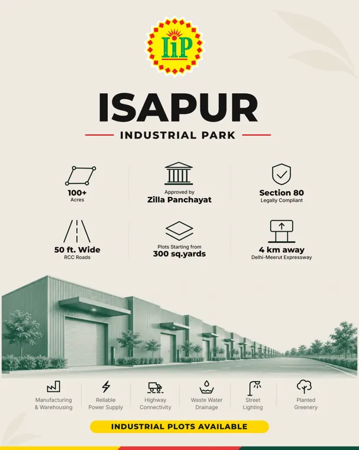
Same render turned into brand green and white. Looks printed, ties to the badge green.

Same render as fine charcoal linework. Plan and drawing feel, very distinctive.
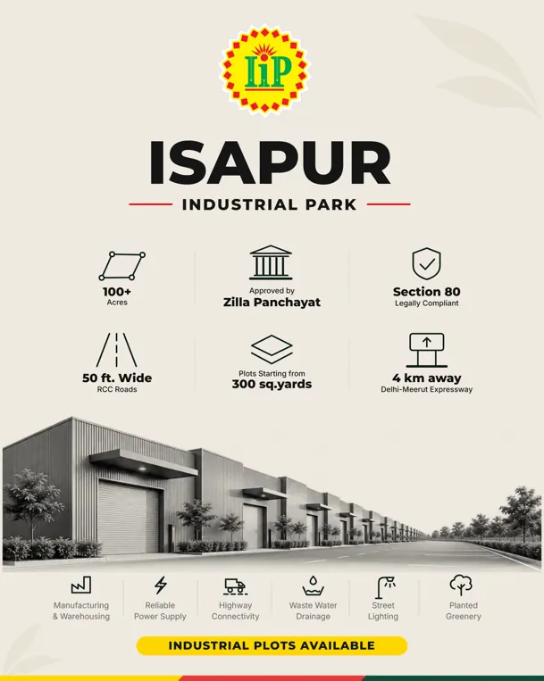
Same render in greyscale. Lets the yellow badge and CTA carry the colour.
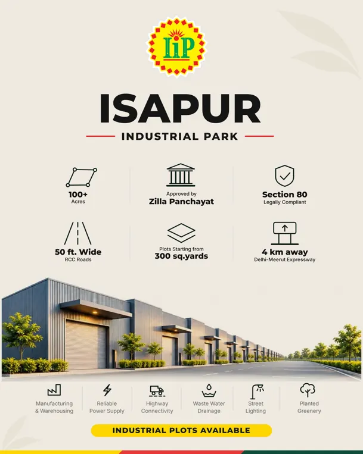
The supplied render, on bone paper. Baseline for the image tests.

Same render graded warm, like late afternoon light.
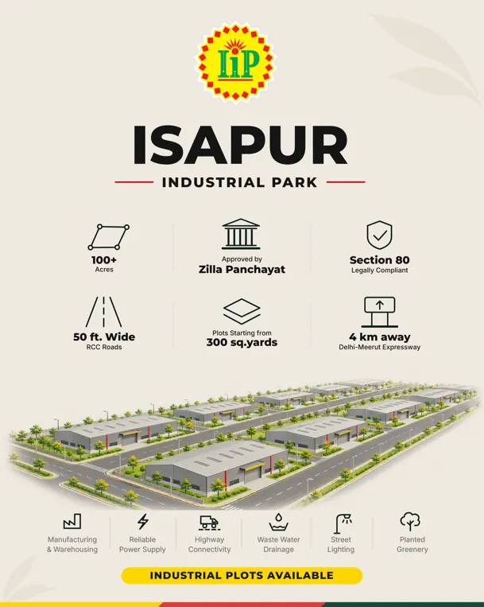
AI generated concept: isometric plot layout.
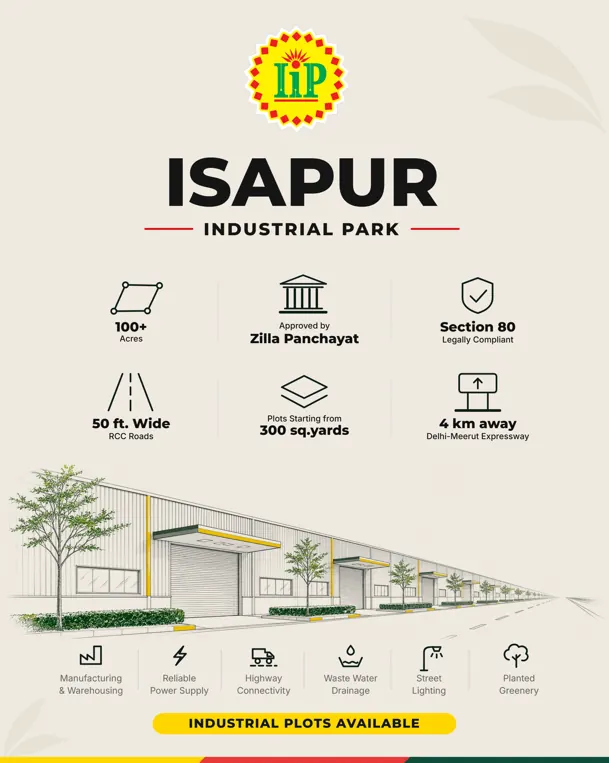
AI generated concept: architectural line drawing.
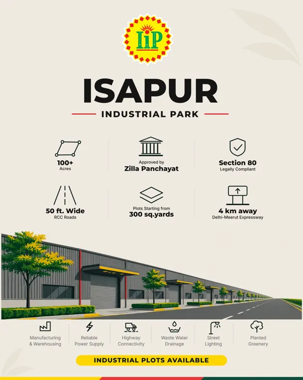
AI generated concept: flat vector style in brand colours.
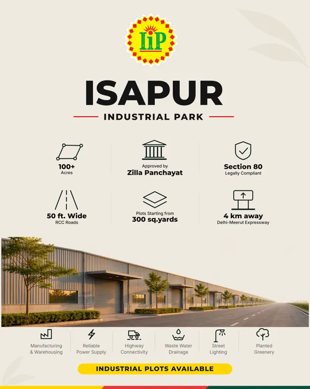
AI generated concept: warm golden hour version of the scene.
Mix and shuffle
Final round: the best fonts, textures and images crossed with each other. Layout and text are still identical to the final poster.
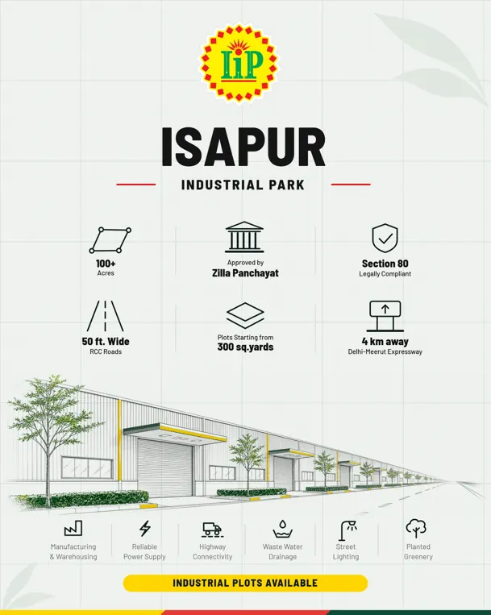
Hairline grid, Barlow Semi Condensed and the AI line drawing. A survey sheet that happens to sell plots.
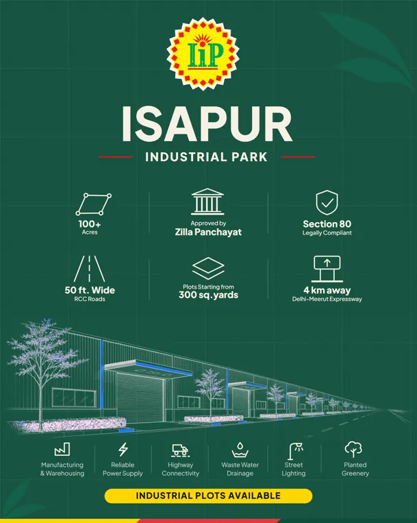
Deep green canvas, the line drawing inverted to cream and screen blended in. Feels like a lit drawing board.
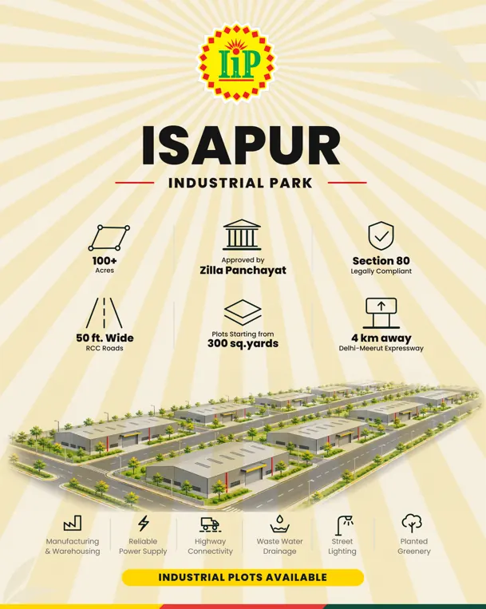
Sunburst rays, Poppins and the isometric plot layout. Bright and energetic, the layout is the star.
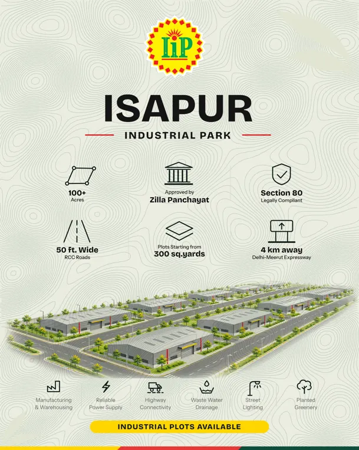
Contour lines under the isometric layout, Bricolage Grotesque. The land theme made literal.
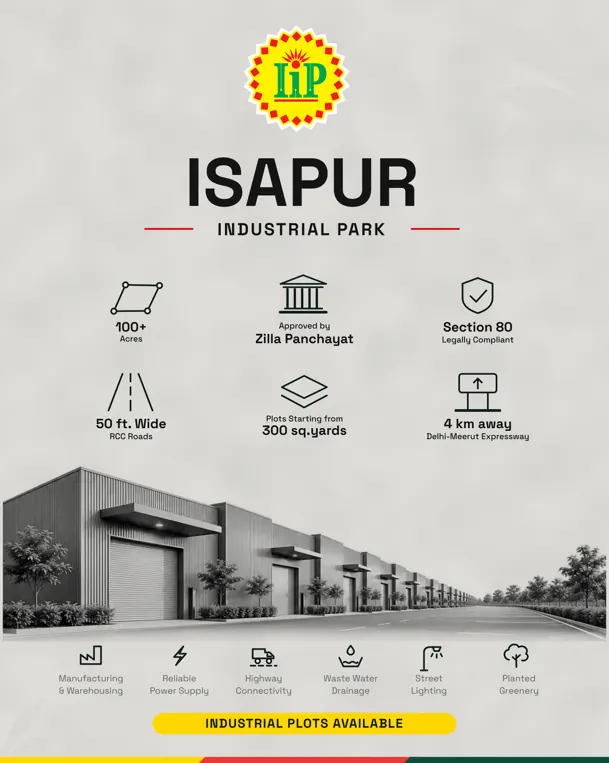
Concrete grey, Space Grotesk and the charcoal photo. Colour comes only from the badge, CTA and flag.
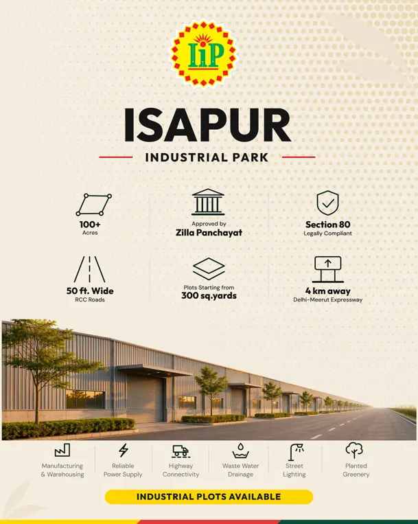
Warm halftone dots, Outfit and the golden hour render. Looks like a screen printed poster.
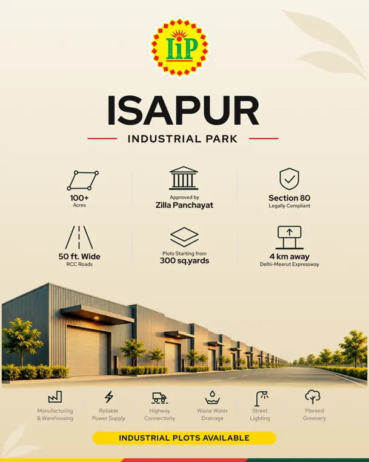
Sand gradient, Red Hat Display and the warm graded photo. The most calm and expensive feeling.
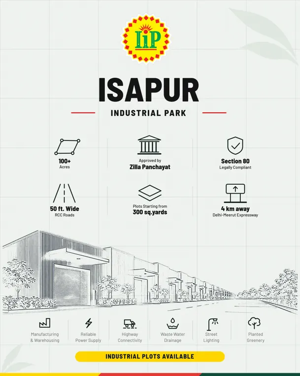
Grid, Barlow and the local line sketch of the real render. Technical without any AI image.
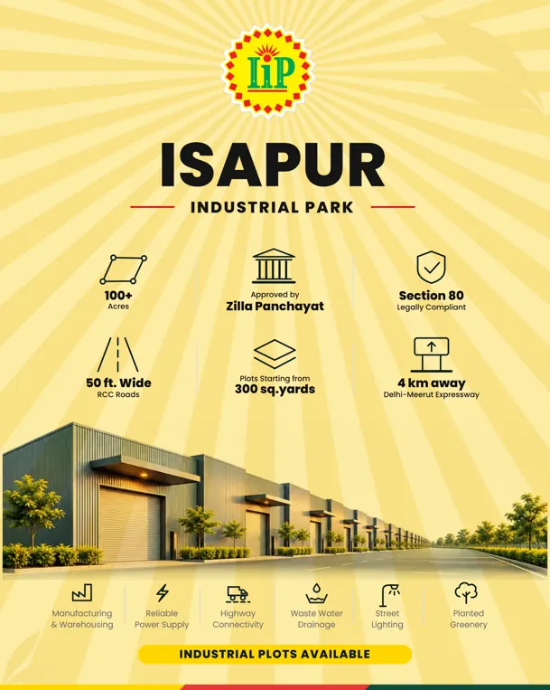
A pale brand yellow canvas with darker rays, Poppins, original render. The badge colour carried across the whole sheet.
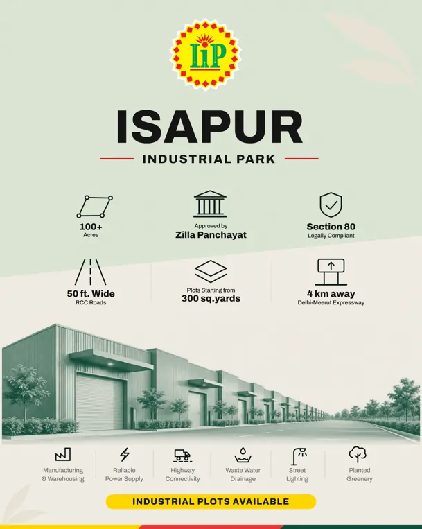
Sage block over bone with a slanted join (echoing the flag), Archivo and the green duotone photo. Two zones, one calm palette.
How to read this
- Tap a poster for the full size image. Editable SVG files are kept in the project folder (Experiments/poster-lab).
- Badge, text, icons and CTA are identical in every card. The brand colours (yellow, red, green) and the thin flag are unchanged.
- Card 09 is the control: the original Montserrat and Inter on bone only, so you can judge what the background alone does.
- Card 07 is the boldest: brand green canvas, cream text, photo as a rounded window.
- Any pick would still need a print test: textures and tints print differently from screens.
References
- Fareham Industrial Park (type-led industrial identity)
- Humber Enterprise Park (branding from site heritage)
- Crosspoint brand launch (standing out among industrial parks)
- Foundry Geelong (commercial property brochure)
- Refero style references (bone #f0eeeb, warns against pure white)
- Neo minimalism reference (paper grain at 2 to 5 percent)
- Fonts for construction and engineering (Barlow, Anton)
- Google font pairings 2026 (Archivo, Space Grotesk, Bricolage)